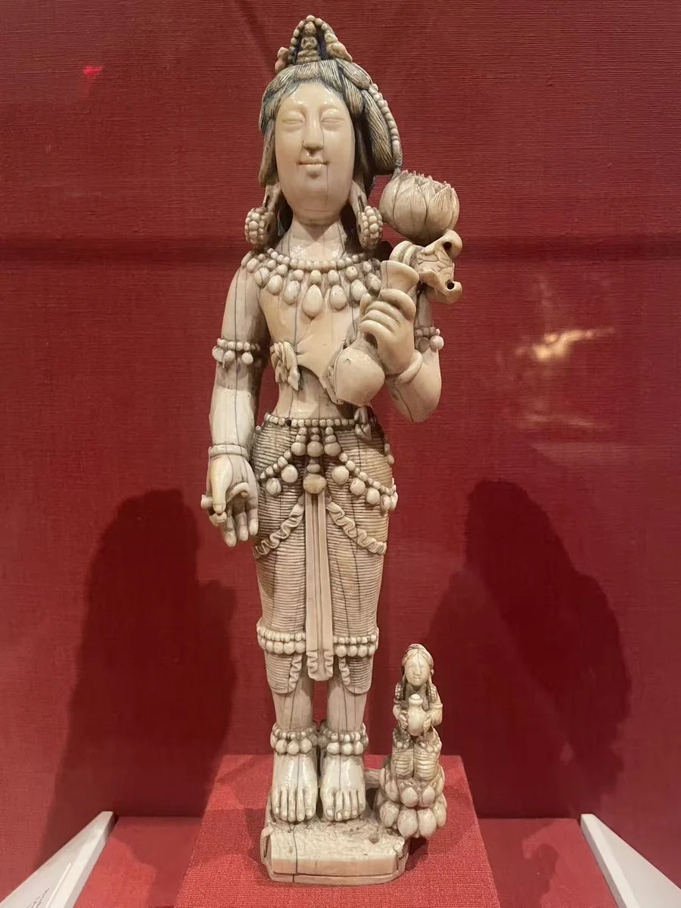
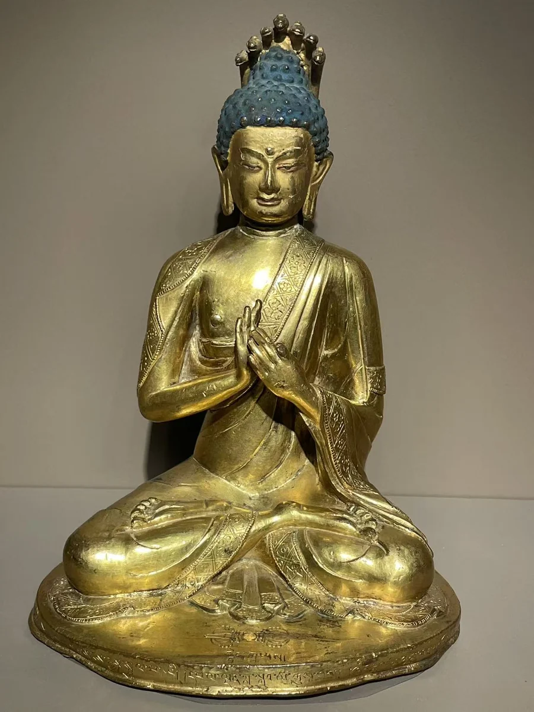

龙树：匝巴南杰造像
沃尔特斯艺术博物馆
20 / CLOSE LOOKING

第十世噶玛巴却英多杰的象牙观音有修长而独特的面容；Walters 龙树像的展签则保留匝巴南杰的名字。把两件作品放在一起，能够从一般的“地域风格”转向具体艺术家。材料、个人语言与僧人的身份，也开始显露出更细的关系。 [13]
细看：象牙观音拉长的面容；莲花与身体的比例；龙树像的衣纹和表面。
沃尔特斯艺术博物馆
图片按各自比例展示，实物不等大。

鎏金铜合金、彩
作品基本资料据现场展签及下列馆方记录整理；文字中的观看描述基于这里的现场照片。